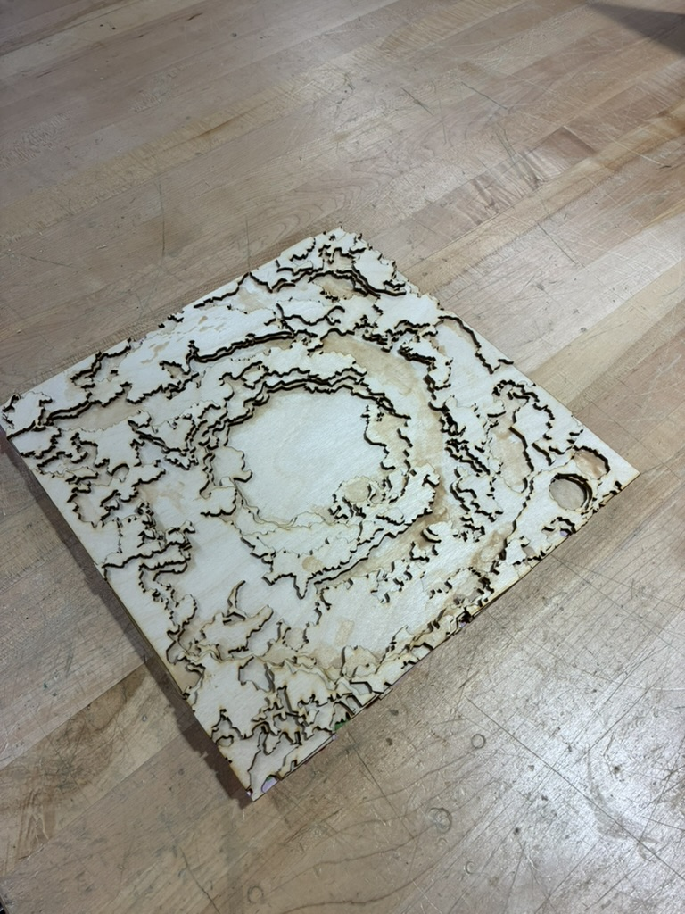

Engineering Project
Moon Craters
This was a simple project I worked on that included the use of open-source software, high-power laser cutting, and a copious amount of good-old wood glue.

Overview
This is a topographic map of the Orientale Impact Crater sliced out of baltic birch wood. This crater is special as one of the most prominent multi-ring structures on the moon. I chose it as it seemed like it would make for a nice topographic map.

Process
I used the laserDEM software to slice a cropped image of NASA's 1GB topographic moon dataset into several layers. I decided to make each layer represent 1km of elevation. In order to conserve wood, I took these layers and organized them into two sections, one with even layers and the other with odds. After slicing on my University's Laser Cutters, I then assembled the pieces using tape and wood glue.
Final assembly
Attributions
- Topographical data taken from NASA's CGI Moon Kit →
- DXF slicing software by David A. Riggs used under MIT license link to repo →